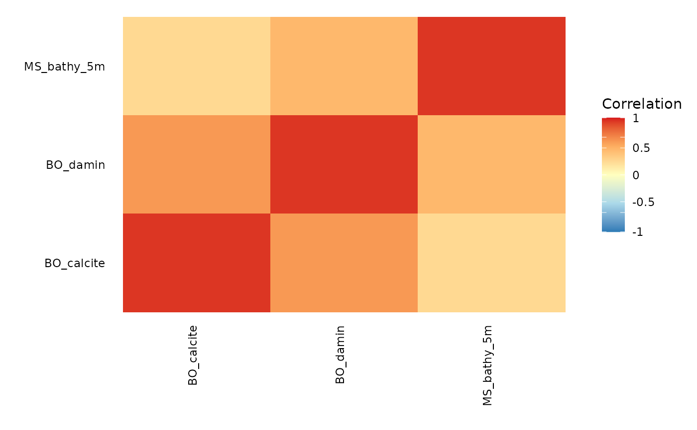

#' plot_correlation creates a plot of the correlation between
different layers
Arguments
- layers_correlation
matrix or dataframe. A square matrix with the layers correlations you want to plot as returned by
layers_correlationorpearson_correlation_matrix.- prettynames
list. Optional list with as names the layercodes and as values the name of the layer to be used in the plot.
- palette
character vector. optional vector with 5 entries for the range of colors to be used for the correlation matrix plot.
Details
This function requires ggplot2 and plots the correlations for the layers in the same order as the layercodes are provided to this function.
Examples
correlation <- layers_correlation(c("BO_calcite", "BO_damin", "MS_bathy_5m"))
p <- plot_correlation(correlation)
#> Warning: `aes_string()` was deprecated in ggplot2 3.0.0.
#> ℹ Please use tidy evaluation idioms with `aes()`.
#> ℹ See also `vignette("ggplot2-in-packages")` for more information.
#> ℹ The deprecated feature was likely used in the sdmpredictors package.
#> Please report the issue at
#> <https://github.com/lifewatch/sdmpredictors/issues>.
print(p)
